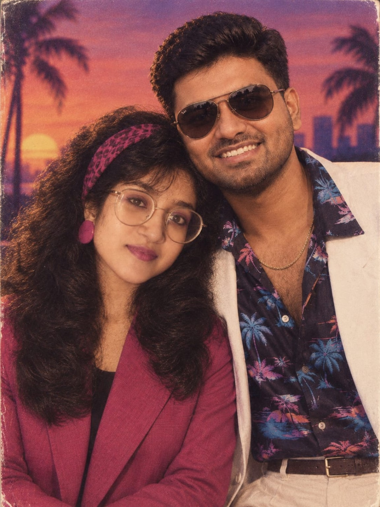
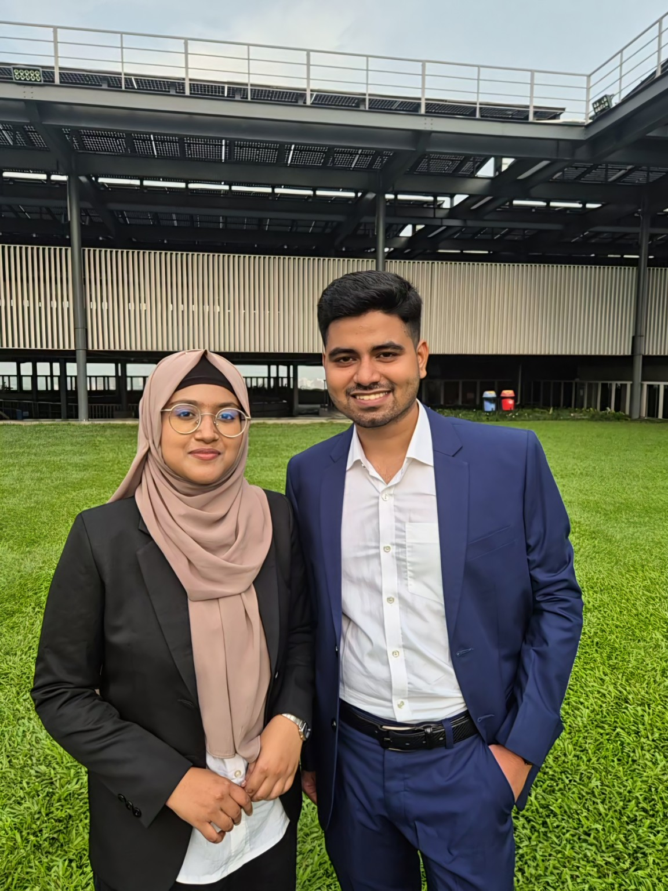
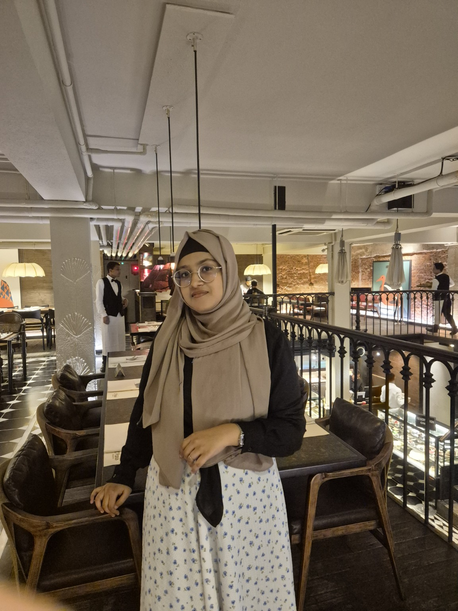
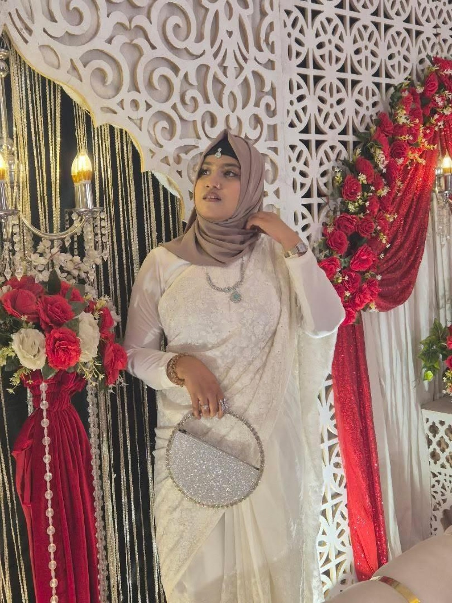
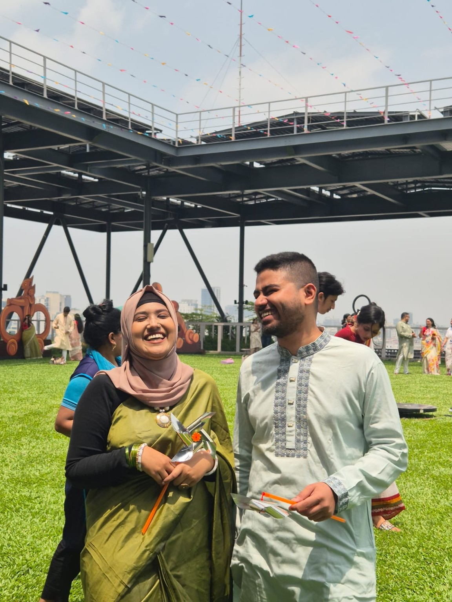
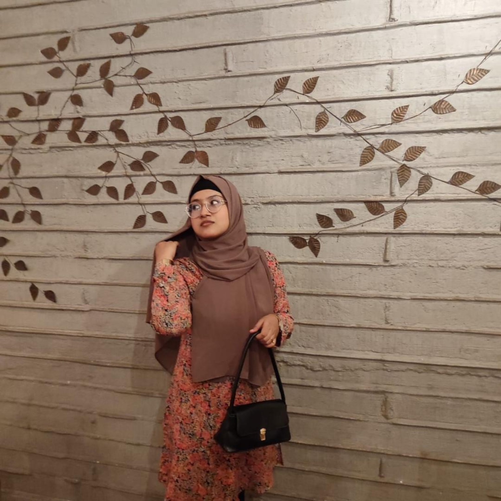
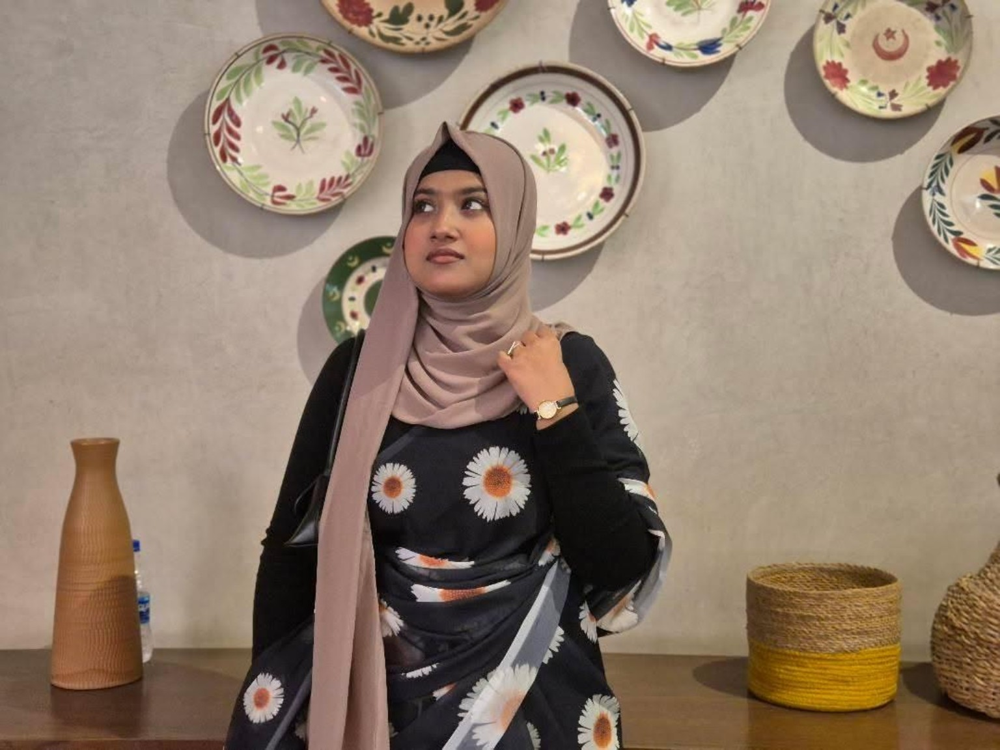
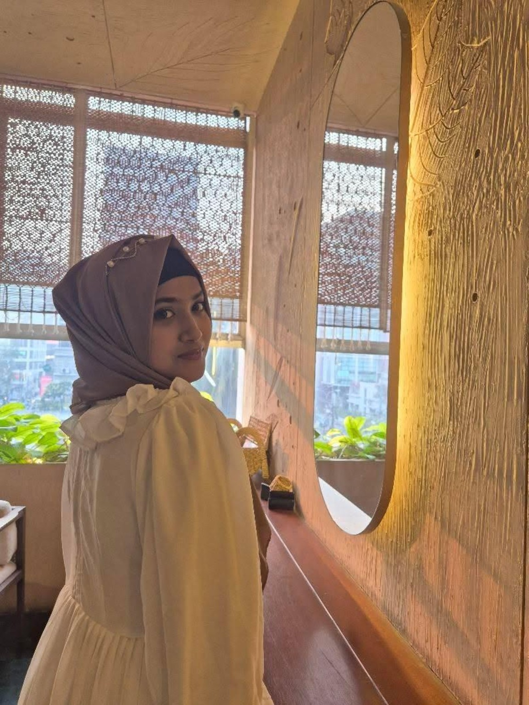
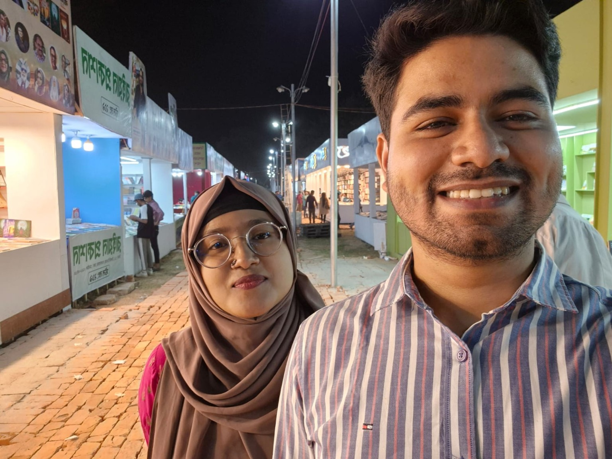
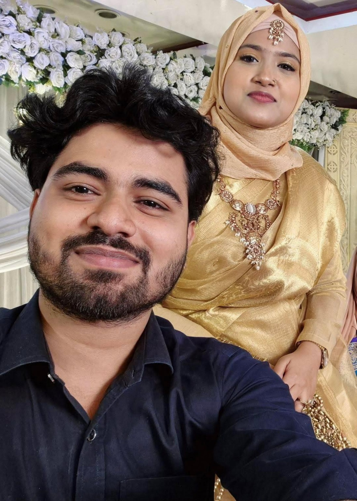

24 September · 2026
Happy Birthday,
Tanjim.
Twenty-six years of you [যদিও আসলে ১৬(তোর বয়স এখনো সবে ষোলো)] and somehow the world still feels a little softer whenever you smile.
keep scrolling ↓Some people become
memories.
Some become home.
I wanted to make you something that wasn't just a birthday wish. Something you could open years from now and still feel the warmth of this little moment.
So this is a tiny corner of the internet that belongs to you , filled with photographs, little thoughts, and all the things that are difficult to say in one ordinary message.
Moments I want
to keep.
Not every beautiful moment announces itself. Some just become precious later.








26 little things
I adore about you.
Tap a card. Let it unfold.
Dear Tanjim,
Happy 26th birthday to the girl who has become one of the most important people in my world.
I don't know if a website can properly hold everything I feel for you, but I wanted to try. These photographs are only photographs; the real memories live in all the little moments between them — the conversations, the laughter, the silly days, the quiet ones, and the times when simply having you around made an ordinary day feel different.
I hope 26 brings you a year filled with gentle mornings, exciting plans, good health, beautiful surprises, and all the things your heart quietly wishes for.
And whenever you look back at this page, I hope you remember one simple thing: somewhere in this world, there is someone who is very, very grateful that you are you.
Happy birthday, Tanjim.
Stay wonderfully, unmistakably you.
one last thing